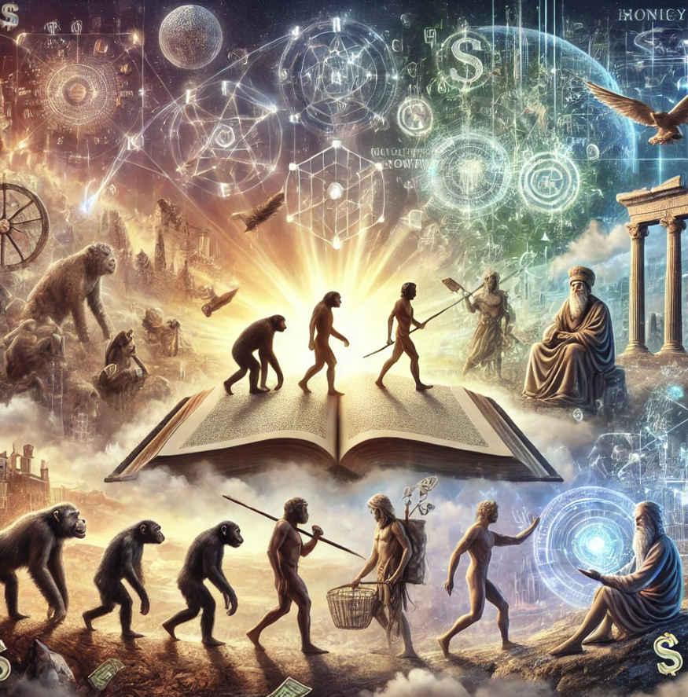

사피엔스
목차
작가
유발 하라리
출판일
2011년
감상평에 대한 AI그림
유발 하라리의 사피엔스는 인류의 기원부터 현대 사회까지의 발전을 통찰력 있게 분석한 책이다. 특히 허구적 질서와 집단적 상상이 문명을 형성하는 과정이 인상적이었다. 인류의 역사뿐만 아니라 현재와 미래를 바라보는 새로운 시각을 제시하며, 우리가 믿고 따르는 가치와 시스템이 어떻게 형성되었는지 깊이 성찰하게 한다. 방대한 내용을 흥미롭게 풀어내어 지적 호기심을 자극하며, 인간 존재에 대한 근본적인 질문을 던지는 책이다.

감상평에 대한 AI평가
감상평이 논리적으로 잘 정리되어 있고, 책의 핵심 내용을 효과적으로 전달하고 있습니다. 특히 **"허구적 질서와 집단적 상상이 문명을 형성하는 과정"**과 같은 주요 개념을 언급한 점이 좋습니다.